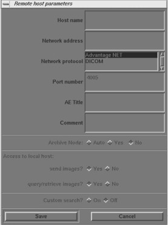
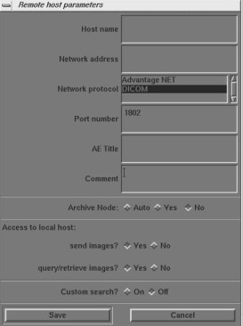

Operating Documentation
Direction 5193574-800, Rev# 22
LightSpeed 7.X Service Methods
Module Version 2.0, Version Date 2/10/15
Operating Documentation |
| NOTE: | Only use the Installation manual that arrives with your system for installation. Any other revisions of this manual may not exactly match your system. |
LightSpeed systems support two basic Networking Protocols:
Advantage NET (IC, Signa 4.X, CT-HLA, CT/I …)
DICOM (CT/I, CT Synergy, Advantage Workstations, …)
DICOM networks operate on the tasks or services that various devices on the network use or provide. These services are labeled as Application Entity Titles (AE Titles). The CT scanner system is uses six DICOM Network Services and is provides two DICOM Services:
Send or “Push” images to another network device.
Send or “Push” images to a DICOM Printer.
Review image database on another device and retrieve or “Pull” selected images from that device (Query/Retrieve User).
Send or “Push” images to a an image storage device and obtain confirmation that the images were archived (Storage Commitment).
Obtain Patient Worklist Information from the Hospital HIS/RIS System.
Store images on MOD media.
Receive “Pushed” images from another network device.
Allow another network device to review the image database and to retrieve or “Pull” selected images (Query/Retrieve Provider).
For each DICOM Service that the CT system is a User (except for storing images on MOD media), you must declare this device on the CT system using three menu selections. For some devices, you must declare not only the device, but each service (AE Title) that the device provides.
For example, you may need to declare a PACS System twice on the CT system: once as a destination to push images and, second, as destination that provides storage commitment capability after images have been pushed.
For each DICOM Service that the CT system is a Provider, you must declare the CT system on the network device that is using these services.
Information required to complete configuring a hospital DICOM network is provided by:
The hospital network administrator (hostnames, IP Addresses)
The DICOM Conformance Statement document (AE Titles, Port Numbers), provided with each DICOM compatible network device on the network.
Before setting up the CT scanner system on the hospital network, verify the following physical items are complete:
Scanner console, monitor, keyboard, and mouse are installed and connected.
CT system power is ON.
Hospital Ethernet network RJ45 Class IV twisted pair cable is connected to the scanner console network receptacle.
Hospital network connection is operational and is running 10baseT or 100baseT.
You need to gather network identity information to do the following tasks:
Declare the CT system on the network
Declare the DICOM remote hosts (PACS systems, archival devices, review workstations) on the CT system.
Declare the DICOM Hospital HIS/RIS Interface devices (Mitra and others) on the CT system.
Declare the DICOM on the CT System.
Ensure the following network identity information is available:
From the Hospital Network Administrator:
Hostname (No more than 16 Characters).
Internet Protocol (IP) Address.
Subnet Net Mask IP Address (if applicable).
Broadcast Address (if applicable).
Network Protocol (DICOM for CT Systems)
From the Remote Host Device DICOM Conformance Statement Document:
DICOM Application Entity Title or AE Title (DICOM service that remote host provides or uses).
DICOM Listening Port Number.
From the HIS/RIS Interface Device DICOM Conformance Statement Document:
DICOM Application Entity Title or AE Title (DICOM Service that the HIS/RIS interface provides).
DICOM Listening Port Number.
From the Printer DICOM Conformance Statement Document:
DICOM Application Entity Title or AE Title (DICOM service that remote host provides or uses).
DICOM Listening Port Number.
On the operator’s console, open a shell window.
Enter root as a superuser:
At the prompt, type: su - <ENTER>
At the password prompt: type the password; press <ENTER>
Change directory to scripts.
Type: cd /user/g/scripts<ENTER> at the root prompt.
Launch the Install Utility:
At the prompt, type: reconfig<ENTER>
The OC displays the Install Utility Window as shown in Illustration 1.
Illustration 1: Install Utility Window

Enter the Configuration Routine:
Click the [CONFIG] button.
The OC displays the System Configuration - System Settings screen, as shown in Illustration 2.
Illustration 2: System Settings Screen

This screen allows you to declare the CT system on a hospital network. Key information such as Host Name, IP Address, Net Mask (for CT systems on a subnet) must be obtained from the hospital network administrator.
Select the [NETWORK] button to display the Network Settings screen as shown in Illustration 3.
Illustration 3: Networks Settings Screen

Enter the Suite Name.
The Suite Name identifies this particular CT system as a part of a group of CT Systems in a suite configuration. This Suite Name appears on all image headers.
The Suite Name must start with a letter, followed by three alphanumeric characters (total MUST be four characters long). The name of the OC interface is <Suite Name>_oc and the SBC interface is <Suite Name>_sbc.
Enter the hospital-provided Host Name.
The Host Name identifies the network hostname and AE Title of the CT system.
The Host Name:
MUST NOT be <Suite Name>_oc or <SUITE NAME>_OC
MUST NOT exceed 16 characters.
MUST only contain the following characters: A through Z, a through z, 0 through 9, - and _
Enter the hospital-provided IP Address.
Enter the hospital-provided Net Mask (if the CT system is on a subnet).
Enter the Broadcast Address
The Broadcast Address should be the same as the IP Address, except for the bits of the host ID portion (last digit group) set to 1’s or 0’s, depending on the configuration of the network. The standard default is 1’s but older SunOS machines used 0’s.
Example: If the IP Address is 192.100.9.17, the Broadcast Address should be 192.100.9.255 if the network is configured to use 1's to specify the broadcast address.
If the network contains genesis-based scanners or other SunOS 3.5 or 4.1 computers, the Broadcast Address should be 192.100.9.0.
Enter the hospital-provided Default Gateway IP Address (if applicable). If the site network does not use a default gateway, leave the field blank.
Select [NIS] (Yellow Pages database) Advanced Option only if requested by the hospital network administrator as follows:
Select [ADVANCED OPTIONS] button on the Network Settings screen.
Select [USE NIS?] button.
Enter the hospital-provided Domain Name.
Record all the Network parameters in the Software Installation Procedures document, or on the worksheet in System Configuration Data Sheets.
Select [ACCEPT] on the System Configuration Screen.
The system loads the application software, OS patches, and kernal changes, and configures the system on both the OC and the SBC.
This loading process takes approximately 15 minutes. While the load is going on, the results are displayed in a shell window, which closes when the loading process is complete. All the window output is logged to a file named:
/var/adm/install.log.YYYYMMDDWWWHHMMSS.
(Where YYYYMMDDWWWHHMMSS is the Date/Time that the loading process was started.)
When the loading process and configuration changes are complete, the system displays a prompt to reboot. Click [YES].
The system automatically logs in as ctuser after the reboot. Select [OK] on the Autostart Disabled popup message.
To startup Applications, in the console shell window, type: startup<ENTER>.
On the OC, select the [IMAGE WORKS] icon.
Select [NETWORK].
Use Advantage NET Protocol networks to communicate with older CT Systems (CT-HLA, CT/I Systems, and Workstations that support the Advantage NET protocol). Advantage NET Protocol does not offer full compatibility with LightSpeed DICOM formats.
Repeat the following procedure for each Advantage NET Remote Host device that the customer expects to have this CT system communicating with.
Select [REMOTE HOSTS] from the pull down menu. The system displays the Remote Host Parameter Screen as shown in Illustration 4.
Illustration 4: Advantage Net Network Protocol Parameter Settings

Enter the hospital-provided Host name.
Enter the hospital-provided Network Address (IP Address).
Select [ADVANTAGE NET] as the Network Protocol.
The system automatically removes the highlighting from the remaining parameter fields on the Remote Host parameter selection screen. These are dedicated DICOM protocol parameters and do not apply to Advantage NET type devices.
Select [SAVE] to store the parameter settings of the remote host.
Use DICOM protocol networks to communicate to DICOM devices such as CT/i, CT Synergy, DLX, MR Lx, and third party hosts.
Repeat the following procedure for each DICOM remote host device that the customer expects to have this CT system communicating with.
Select [REMOTE HOSTS] from the pull down menu. The system displays the Remote Host Parameter screen as shown in Illustration 5.
Illustration 5: DICOM Network Setting Protocol Parameter Settings

Enter the hospital provided Host name.
Enter the hospital provided Network Address (IP Address).
Select [DICOM] as the Network Protocol.
The system automatically highlights the remaining parameter fields on the Remote Host parameter selection screen. These are dedicated DICOM Protocol parameters.
Enter the TCP/IP Listening Port Number from the DICOM Conformance Statement provided with the device.
Enter the AE Title from the DICOM Conformance Statement provided with the device.
Application Entity Titles (also known as ACR-Nema or Dicom Name) refer to the DICOM Network Services that a device provides to the CT System. For most devices, the AE Title is the same as the hostname (CT systems are equipped with this feature).
However, some devices such as PACS systems may have separate AE Titles and port numbers for each of the services that the PACS system provides. In these cases, you must enter a separate remote host (same hostname and IP Address) for each of the independent AE Title Services that the host provides (one host as an image push-to destination, another host as a query/retrieve provider, and another host as a storage/commitment provider).
Be sure to review the DICOM Conformance Statement for each device that will provide a remote host network service for the CT system (image push-to or store destination, Query/ Retrieve, and Storage Commitment) to ensure that each service is correctly configured.
Select the correct Archive Node choice for the device. The Archive Node selection field defines the ability of the remote host to act as a DICOM Storage/Commitment provider and indicate to the operator that a study/series/image was archived. Select:
[AUTO] to have the CT system automatically check to see if the designated remote host is a DICOM Storage/Commitment Provider.
[YES] if the device is the hospital designated DICOM Storage/Commitment Provider. During an Application Study Archive process, the local browser screen will indicate Archive Status = Y to the operator.
[NO] if the device is not a DICOM Storage/Commitment Provider.
Select the correct Access to local host: settings. These two selections allow you to selectively block the remote host from using the LightSpeed DICOM services as a provider (image push-to destination, and a Query/Retrieve provider).
Send Images? Set to [YES] if the customer wants the CT system to be able to have images pushed to the system from the applicable remote host. Set to NO if the customer wants to block an image push from the applicable remote host.
Query/retrieve images? Set to [YES] if the customer wants the remote host to be able to review the image database (query) and pull selected images from the database. Set to [NO] if the customer does not want the remote host to have this ability.
Select the correct Custom search? setting. This selection allows the CT scanner to selectively search through the remote host's image database when the operator is using remote browser screen to query the remote host. The search parameters that the CT system allows the customer to use are: last name contains, patient ID, exam number, accession number, and exam date.
Select [ON] if the device supports custom searches as part of the devices Query/Retrieve DICOM Provider service.
Select [OFF] if the device does not support custom searches.
Record all the remote host network parameters for each remote host in the Software Installation Procedures document.
Select [SAVE] to store the parameter settings of the remote host.
Refer to the appropriate service manual provided with the Advantage NET Protocol device or system to find instructions how to declare the CT System as an Advantage NET remote host.
Refer to the appropriate Service Manual provided with the DICOM protocol device or system to find instructions how to declare the CT System as a DICOM remote host.
The CT System provides two DICOM Services as a provider to remote hosts:
A remote host can push images to the CT image database.
A remote host can review the CT image database (query) and pull selected images (retrieve).
Use the following parameter information to configure the DICOM device/system to either push images to the CT scanner and/or perform a Query/Retrieve operation:
Hostname: Provided by the Hospital Network Administrator. Exactly the same scanner assigned hostname entered in Network Configuration Screen.
Application Entity Title: Exactly the same entry as the Hostname.
Network Address: Provided by the Hospital Network Administrator. Exactly the same scanner assigned IP Address entered in Network Configuration Screen.
Network Protocol: DICOM 3.0.
Port Number: For all DICOM service that the CT System provides, use 4006.
Provider Type: This field concerns the LightSpeed DICOM Query/Retrieve provider capability. All CT systems are wtudy root systems, which allow queries at the exam, series, and image level.
Support Worklist: This field concerns whether a DICOM Query/Retrieve provider capable device or system supports a filter search of the image database. All CT systems support a filtered search of the image database as part of the LightSpeed DICOM Query/ Retrieve provider capability.
Most hospital HIS/RIS systems are not DICOM compatible and require a DICOM HIS/RIS Worklist Interface to provide patient scheduling information to the CT system. Contact your local HNS support engineer to determine exactly what DICOM HIS/RIS Interface is appropriate for the customer.
In addition, the CT system must have the ConnectPRO software option installed to utilize the DICOM Protocol Worklist capability.
Refer to ConnectPRO Software Option Installation and Checkout procedure.
The following is a summary of troubleshooting information for DICOM print that was gathered during software testing and validation of the DICOM print feature.
There is also a significant amount of additional troubleshooting procedures, and the theory of the DICOM print feature in the System Service Manual. Should you have problems installing a DICOM print camera, first read the information in System Service Manual.
ERROR BRINGING UP THE CAMERA INSTALLATION/FILMING APPLICATION
Symptom: After creating/modifying the DICOM print camera the install camera interface does not come up and the filming application indicates it cannot bring up the film composer.
Cause: The configuration field contains invalid information such as a backslash (\) as the final character in the field or brackets ({}).
Solution: The camera.dev file in ~ctuser/app-defaults/devices must be manually edited to remove the offending characters in the set configuration line. Invalid characters include \{}
CONFIGURATION INFORMATION FIELD
Symptom: Cannot view the entire configuration field (> 25 characters)
Solution: Hold down the middle mouse button and move the field contents
NEED TO SET DICOM PRINT ATTRIBUTES NOT SUPPORTED BY SOFTWARE
Symptom: User wants the white border around each image box ON/OFF permanently for this system and it cannot be set as the default for the camera.
Solution: Using your favorite editor, add the following line to the camera.dev file located in ~ctuser/app-defaults/devices after the DICOM print device has been otherwise configured.
For Trim Off - set TRIM NO
For Trim On - set TRIM YES
Symptom: DICOM print camera supports multiple film sizes and the user only wants to print if the film size is correct for LightSpeed 7.X (14x17). [Otherwise the camera will queue the films or return an error causing the queue to pause (based upon the DICOM print camera specifications).]
Solution: Using your favorite editor, add the following line to the camera.dev file located in ~ctuser/app-defaults/devices after the DICOM print device has been otherwise configured.
To force a 14x17 film size - set filmSize 14INX17IN
NEED TO PREVENT DICOM PRINT ATTRIBUTES FROM BEING SENT TO DICOM PRINT CAMERA
Symptom: Some DICOM print attributes are optional, and may result in fatal errors. For example, the Fuji camera does not support the Empty Image Density parameter for the film box.
Solution: Using your favorite editor, add the following line(s) to the camera.dev file located in ~ctuser/app-defaults/devices after the DICOM print device has been otherwise configured.
To prevent sending the Smoothing Parameter set FB_Smooth FALSE
To prevent sending the Border Density set FB_Border FALSE
To prevent sending the Empty Image Density set FB_EID FALSE
To prevent sending the Minimum Density set FB_MinD FALSE
To prevent sending the Trim Parameter set FB_Trim FALSE
ERROR TRYING TO CONNECT TO THE DICOM PRINT CAMERA
Symptom: DICOM print server can be reached (ping), but Application error indicates "Unable to start filming interface" and the help message talks about running the install.dasm (Association Error)
Solution: The system is unable to complete the association. Check the AE Title and the Port number of the DICOM print server and correct them through the Install Camera procedure.
FILM COMPOSER ERROR NOT USABLE
Symptom: Film composer error says “unrecognized status - code 0”
Solution: Review the log file, the attention and status windows. These areas have the correct filming status (for example, film jam and supply empty).
DEBUGGING CONNECTION ISSUES DIFFICULT
Symptom: The timeouts for the DICOM print are very long, which means one needs to wait a long time before you know the application is not working.
Solution: The timeouts for the DICOM print were setup to ensure that the system would work regardless of whether the DICOM print camera was on a LAN or a WAN halfway around the world. The DICOM print timeouts for the association and DIMSE classes (for example, N-GET, N-DELETE) can be modified within the DICOM print camera installation. They can be reduced down to 90 seconds.
DICOM PRINT ERROR ON N-GET TIMEOUT CONFUSING
Symptom: When the N-GET timeout goes off, the error message in the prslog file will be “Could not get printer status, invalid command sequence for N-GET”.
Solution: When the user sees the above error they may want to consider that the issue may be an inactivity timer on the N-GET DIMSE service.
DICOM PRINT CAMERA SLIDE SUPPORT
Symptom: Current implementation of DICOM print does not allow selection of slide format.
Solution: Feature not currently supported. Possibly in future releases.
CONFUSION ON FILM FORMAT NOTATION
Symptom: GE Healthcare Laser Camera and DICOM Print film format notations are opposite.
Solution:
GE Healthcare Laser Camera film format notation has always been row x col (for example, 12 on 1 = 4x3)
DICOM Print Standard film format notation is col x row (for example, 12 on 1 = 3x4)